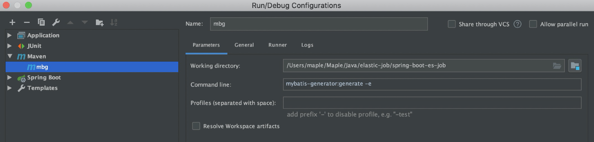
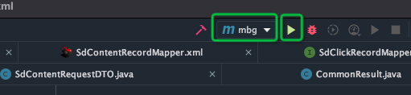

Mybatis Generator【MBG】配置
MBG插件配置
Step1：使用MBG的前提是需要在项目中添加MBG插件。
在项目的pom文件中添加以下插件：
1
2
3
4
5
6
7
8
9
10
11
12
13
14
15
16
|
<plugin>
<groupId>org.mybatis.generator</groupId>
<artifactId>mybatis-generator-maven-plugin</artifactId>
<version>1.3.2</version>
<configuration>
<verbose>true</verbose>
<overwrite>true</overwrite>
<configurationFile>src/main/resources/generatorConfig.xml</configurationFile>
</configuration>
</plugin>
|
MBG的内容配置
Step2：在项目的resource目录下的新增MBG配置文件，如： generatorConfig.xml
1
2
3
4
5
6
7
8
9
10
11
12
13
14
15
16
17
18
19
20
21
22
23
24
25
26
27
28
29
30
31
32
33
34
35
36
37
38
39
40
41
42
43
44
45
46
47
48
49
50
51
52
53
54
55
56
57
58
59
60
61
62
63
64
65
66
67
68
69
70
71
72
73
74
75
76
77
78
79
80
81
82
83
84
85
86
87
88
89
90
91
92
93
94
95
96
97
98
99
100
101
102
103
104
105
106
107
108
109
110
111
112
113
114
115
116
| <?xml version="1.0" encoding="UTF-8"?>
<!DOCTYPE generatorConfiguration
PUBLIC "-//mybatis.org//DTD MyBatis Generator Configuration 1.0//EN"
"http://mybatis.org/dtd/mybatis-generator-config_1_0.dtd">
<generatorConfiguration>
<classPathEntry
location="/Users/maple/Maple/Tools/Maven/repository/mysql/mysql-connector-java/8.0.21/mysql-connector-java-8.0.21.jar"/>
<context id="DB2Tables" targetRuntime="MyBatis3">
<property name="javaFileEncoding" value="UTF-8"/>
<property name="javaFormatter" value="org.mybatis.generator.api.dom.DefaultJavaFormatter"/>
<property name="xmlFormatter" value="org.mybatis.generator.api.dom.DefaultXmlFormatter"/>
<property name="beginningDelimiter" value="`"/>
<property name="endingDelimiter" value="`"/>
<commentGenerator>
<property name="suppressDate" value="true"/>
<property name="suppressAllComments" value="true"/>
</commentGenerator>
<jdbcConnection driverClass="com.mysql.cj.jdbc.Driver"
connectionURL="jdbc:mysql://127.0.0.1/Mybatis"
userId="root"
password="nba106118">
</jdbcConnection>
<javaTypeResolver>
<property name="forceBigDecimals" value="false"/>
</javaTypeResolver>
<javaModelGenerator targetPackage="com.maple.shudong.modal" targetProject="src/main/java">
<property name="enableSubPackages" value="false"/>
<property name="trimStrings" value="true"/>
<property name="constructorBased" value="false"/>
<property name="immutable" value="false"/>
</javaModelGenerator>
<sqlMapGenerator targetPackage="mapper" targetProject="src/main/resources">
<property name="enableSubPackages" value="true"/>
</sqlMapGenerator>
<javaClientGenerator type="XMLMAPPER" targetPackage="com.maple.shudong.dao" targetProject="src/main/java">
<property name="enableSubPackages" value="true"/>
</javaClientGenerator>
<table tableName="sd_click_record" domainObjectName="SdClickRecord" delimitIdentifiers="true"
enableCountByExample="false"
enableUpdateByExample="false"
enableDeleteByExample="false"
enableSelectByExample="false"
selectByExampleQueryId="false">
<generatedKey column="id" sqlStatement="MYSQL" identity="true" type="post"/>
</table>
</context>
</generatorConfiguration>
|
MBG启动配置
Step3：MBG的启动方式使用Maven命令行，在IDEA下的配置如图：

Maven命令：
1
| mybatis-generator:generate -e
|
上述命令可能会抛以下异常：
1
| [ERROR] Could not find goal 'gererate' in plugin org.mybatis.generator:mybatis-generator-maven-plugin
|
此时，使用以下命令：
1
| -Dmybatis.generator.overwrite=true mybatis-generator:generate
|
MBG运行
Step4：在IDEA的启动配置框中选择上述创建的启动配置，点击运行即可。

 微信
微信